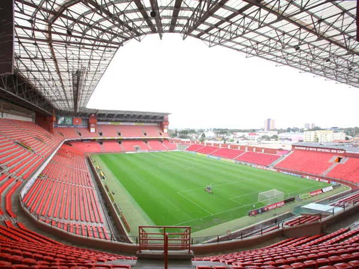
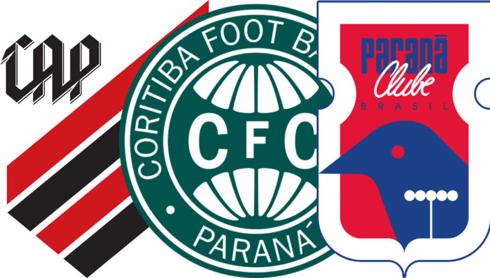
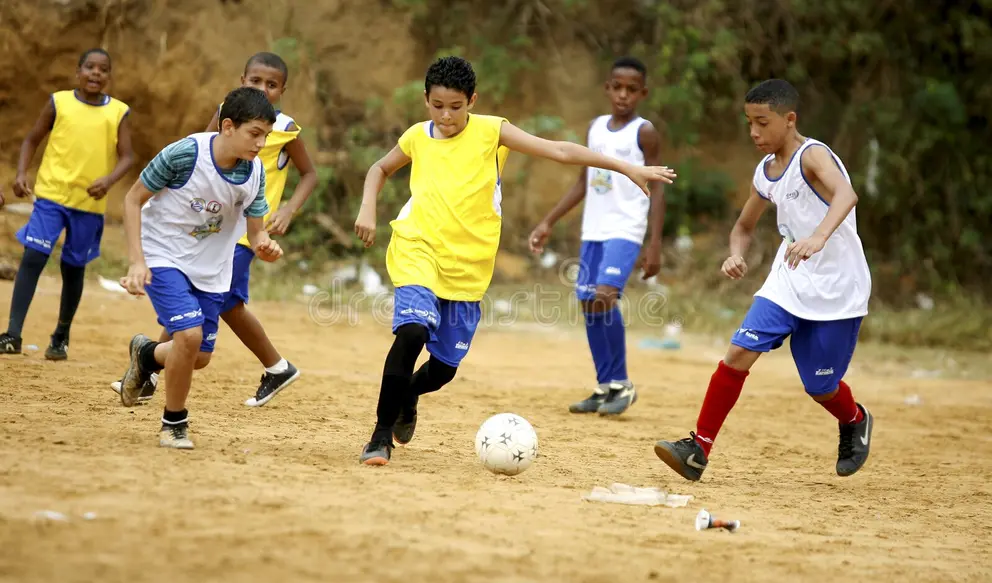

BEM-VINDO AO MEU SITE!
Bem-vindo ao espaço definitivo dedicado à paixão, à história e às rivalidades que moldam o futebol paranaense. Este site foi criado para explorar o universo do famoso "Trio de Ferro" da capital — Athletico, Coritiba e Paraná Clube —, destacando a identidade única que cada um desses gigantes carrega. Mais do que apresentar dados e estatísticas, nosso objetivo é mergulhar nas maiores curiosidades, nos rituais das arquibancadas e nos fatos surpreendentes que fazem da cultura do futebol no Paraná um espetáculo tão vibrante e singular. Prepare-se para reviver momentos históricos e descobrir os bastidores de uma das regiões mais tradicionais do esporte brasileiro.

contexto histórico
Nesse mesmo ano, o Coritiba foi fundado por entusiastas liderados por Fritz Essenfelder, tornando-se o pioneiro.Para bater de frente com o rival, as fusões entre clubes locais começaram a ditar o ritmo do esporte.Em 1924, a união entre International e América deu origem ao Club Athletico Paranaense.Muito depois, em 1989, a fusão definitiva entre Colorado e Pinheiros criou o Paraná Clube.Esses três gigantes formaram o Trio de Ferro, centralizando as grandes paixões da capital do estado.O esporte cresceu impulsionado pelas ferrovias, que levavam os times para jogar em cidades do interior.Casarões e campos improvisados deram lugar a estádios modernos nos bairros Juvevê, Água Verde e Batel.Hoje, essa história centenária se reflete em uma cultura rica de arquibancada, rivalidades e forte identidade local.

importancia cultural
O futebol é um dos pilares mais fortes da identidade cultural e do orgulho do povo paranaense.Ele vai muito além das quatro linhas, moldando o comportamento e a rotina das cidades do estado.As cores do Trio de Ferro demarcam territórios urbanos e dão vida aos bairros de Curitiba.A paixão clubística funciona como uma herança familiar, unindo gerações por meio do afeto e da tradição.Nos dias de clássicos, as ruas se transformam, movimentando o comércio local e o turismo da região.A história dos clubes reflete a própria formação social do estado, envolvendo imigrantes e operários.Essa cultura forte de arquibancada projeta o Paraná no cenário nacional e bate de frente com outros estados.Expressões locais, gírias futebolísticas e rituais de torcida enriquecem o vocabulário e o folclore regional.O esporte atua como um espelho da resiliência e da vibração que caracterizam a população paranaense.Celebrar essa história é preservar a memória viva de um povo que respira futebol diariamente.
